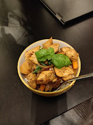

Teriyaki Chicken

Description
A delicious and filling dish, this Japanese inspired meal prep contains stir fried chicken and vegetables coated in a home made Teriyaki sauce and served with a side of rice. This recepie makes 4 portions, which can be stored for up to 4 days in a fridge or 2-3 months in a freezer.
Ingredients
Stir fry ingredients
- 1kg chicken breast fillets
- 1 Large brown onion
- 2 Carrots
- 3 Bell peppers
- 2 Pak choi
- 1 Large spring onion
- 4 Cups white rice
- (Optional) chicken stock cube
- (Optional) Sesame seeds
Teriyaki sauce ingredients
- 300ml Kikkoman soy sauce
- 2 Tbsp sesame oil
- 1 Tsp mirin
- 1 Tbsp rice vinegar
- 1 Tsp lemon juice
- 15g Ginger
- 4 Cloves garlic
- 1 Tbsp honey
- 2 Tsp corn flour or corn starch
Steps
- Add 4 cups of washed white rice to a rice cooker, fill with water to indicated level for 4 cups and optionally add a cube of chicken stock.
- Finely slice one brown onion
- Finely slice 3 bell peppers
- Roughly chop the pak choi
- Peel and slice carrots into thin strips. This can be done by slicing at an angle.
- Slice spring onions, separating the white root from the green stems
- Prepare the sauce by mixing all wet ingredients, grating the ginger, crushing the garlic and mixing together well
- Butterfly and dice the chicken breasts into even, bite-sized chunks
- Heat up 1tbsp of sesame oil in a pan and add the chicken over high heat
- When chicken is lightly browned (approx. 5 minutes), add the onion and bell peppers and cook for 3-4 minutes.
- Add the carrots, pak choi and spring onion stems to the pan and cook for 2-3 minutes
- Add in the sauce and mix together well, reducing the heat to medium-low
- Make a slurry with the corn flour by mixing with 100ml of water and add to the sauce to thicken
- Season to taste
- Serve with the rice, garnishing with the spring onion greens and sesame seeds